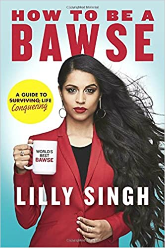

Lilly Singh (born September 26, 1988) is a Canadian comedian, actress, former talk show host, and YouTuber who formerly appeared under the pseudonym Superwoman (stylized IISuperwomanII), her longtime YouTube username. Born and raised in Scarborough, Ontario, Singh began making YouTube videos in 2010.
Born in September 26, 1988. In Toronto, Ontario, Canada
Her parents, Malvindar Kaur and Sukvindar Singh, are Indian immigrants from Hoshiarpur, Punjab, India, and raised her as a Sikh.
Her older sister Tina (born 1982) is also a YouTuber; she makes videos about her family life with her husband and their three sons.
She attended Mary Shadd Public School during her elementary years, and in 2006, she graduated from Lester B. Pearson Collegiate Institute in Malvern, Toronto.
In 2010, she graduated from York University in Toronto with a Bachelor of Arts in Psychology.
"A Little Late with Lilly Singh" makes its debut on September 16, 2019. The comedian, actress, social media sensation, producer and author of
“How to Be a Bawse: A Guide to Conquering Life,” Lilly Singh brings her unique perspective to late night as she hosts celebrity interviews,
talks current events, performs musical and sketch comedy, plays games, and more.
A self-proclaimed “unicorn,” the multi-faceted star’s debut in the late-night landscape is especially noteworthy as she’s a Canadian woman
of Indian descent, combining a fresh take on the day’s events, pop culture, diversity and life.
How to Be a Bawse: A Guide to Conquering Life (2017)

Be A Triangle: How I Went From Being Lost Into Getting My Life Into Shape (2022).
MTV Fandom Awards - 2015
Streamy Awards - 2015
Teen Choice Awards - 2016
Streamy Awards - 2016
People's Choice Awards - 2017